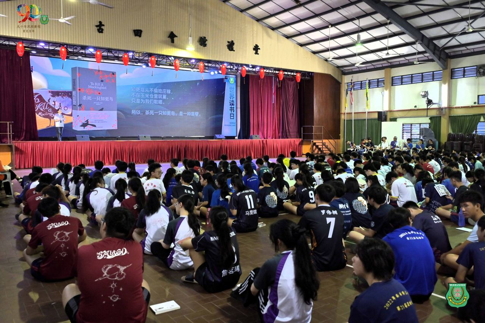
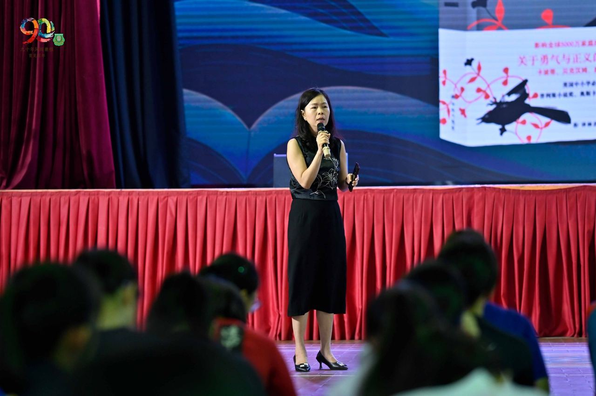
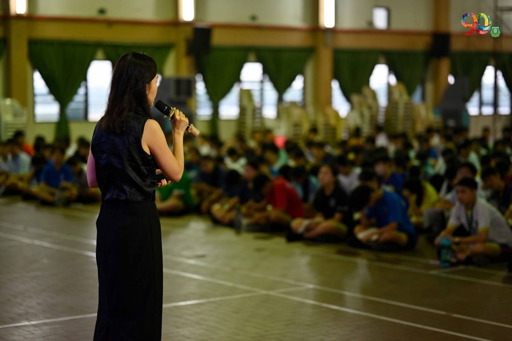
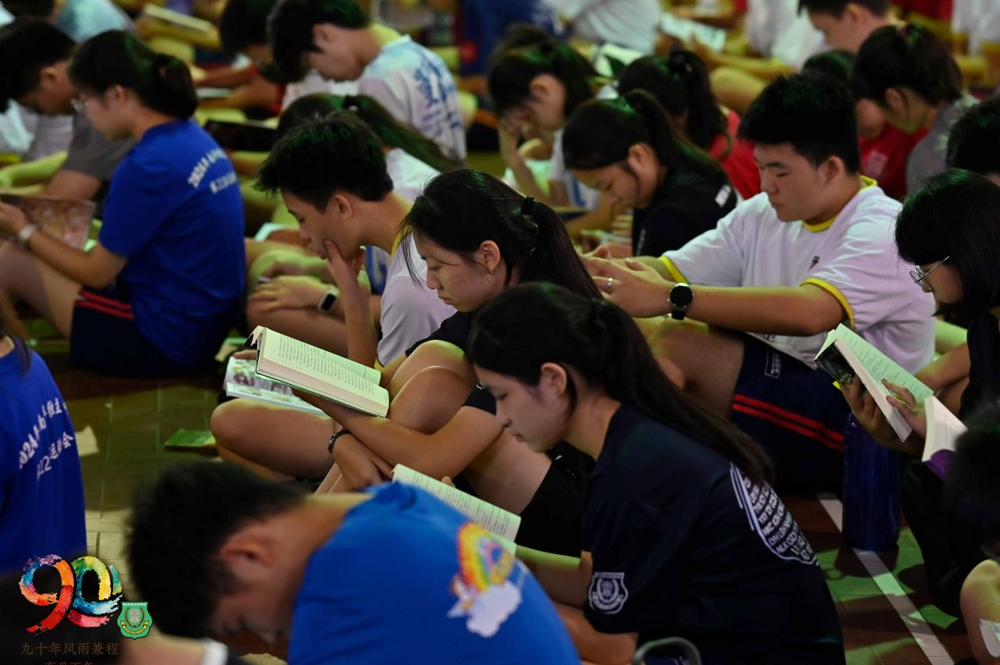
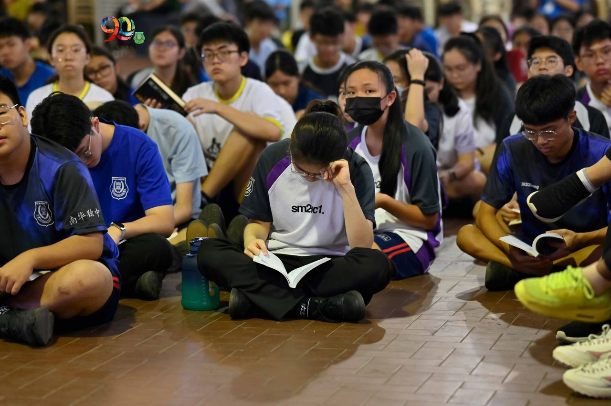
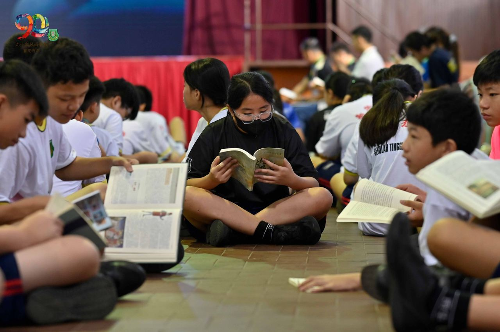
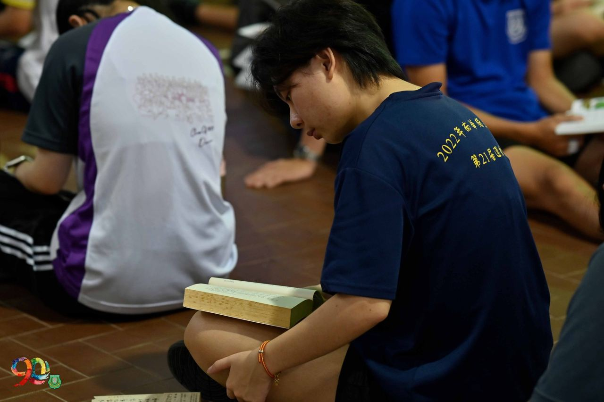
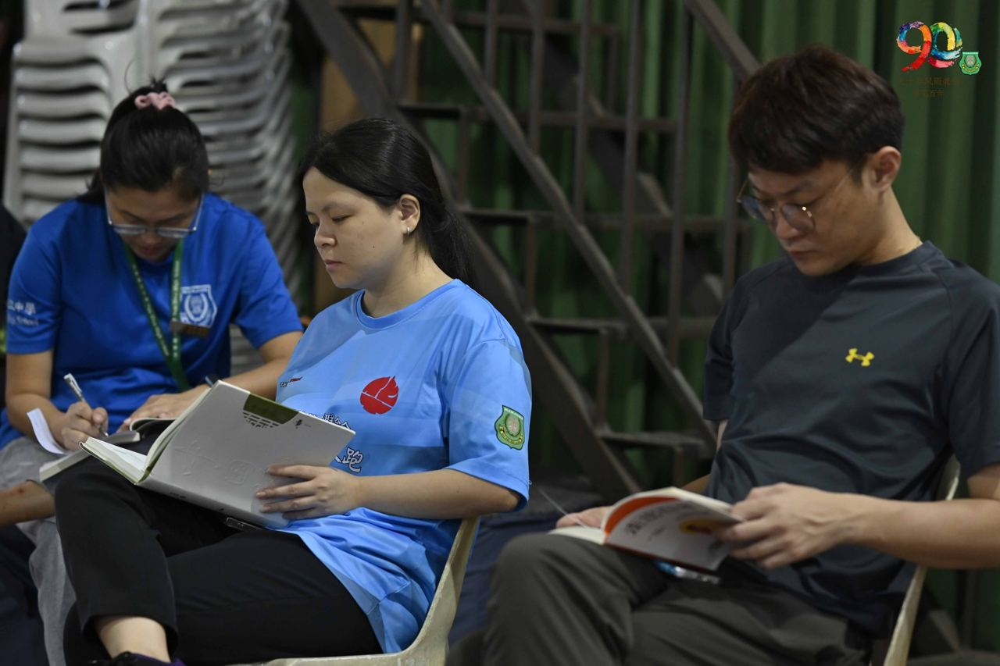

以正义为尺 · 以阅读为镜
以正义为尺 · 以阅读为镜
"悦读南华"2026世界阅读日校园共读活动
南华独中全体师生藉2026年"世界阅读日"（World book Day）齐聚礼堂，参与主题为"悦读南华"的校园共读活动。在一年一度的书香盛会中，华文科教师林子策老师担任本届活动导读人，带领师生走进美国文学经典——哈珀·李（Harper Lee）的《杀死一只知更鸟》。
南华独中每日二十分钟"晨读课"依然成为校园日常最美风景，而每年世界阅读日更是将这场私密的阅读延伸为集体仪式，将个人书页上的思绪汇聚为整个礼堂的共同回响。2026年接下导读棒子的是林子策老师，《杀死一只知更鸟》中那句贯穿全书的警语「杀死一只知更鸟，是一种罪孽。」成为导读的轴心，首先通过引导师生借助八岁女孩斯科特（Scout）的目光凝视种族隔离时代的社会偏见，再来便是见证辩护律师阿提克斯·芬奇（Atticus Finch）在不可能胜诉的案子中，独守道德良知的样貌。
导读渐入尾声时，校长陈丽冰博士也接过话筒，一一标记处原著中好几处不容错过的精华段落，不仅鼓励师生们自动自发踏书海的世界，让阅读成为照见自身的一面镜，让知识成为生命中标记跨越人生关卡的书签。
导读结束后，活动进入全校集体阅读环节。整个礼堂随即沉入静默，唯有书页翻动声此起彼伏，此刻的安静本身，便是一种表态——对文字的尊重，对思考的珍视。师生各持所爱之书，或沉浸于故事，或在段落之间停下凝神，在灯光柔和的礼堂里，于纸上相遇，在心中共鸣。







